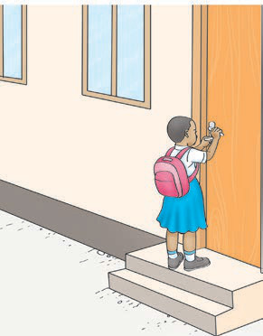

| Instructions | Actions in pictures | Oral or sign responses |
|---|---|---|
Water the garden. |  | I am watering the garden. |
Lock the classroom door. |  | I am locking the classroom door. |
Carry the books. | I am carrying the books. |
| Instructions | Actions in pictures | Oral or sign responses |
|---|---|---|
Water the garden. | | I am watering the garden. |
Lock the classroom door. |  | I am locking the classroom door. |
Carry the books. | I am carrying the books. |